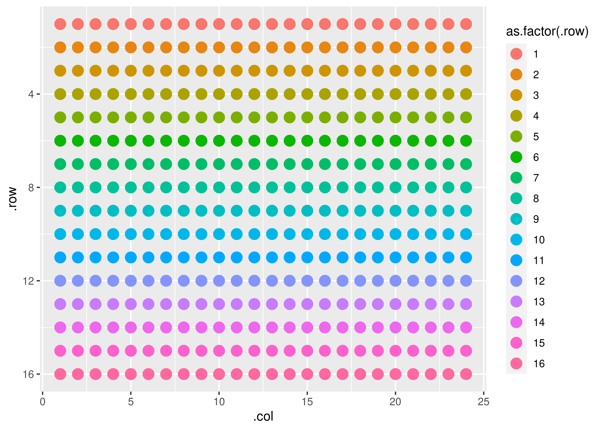
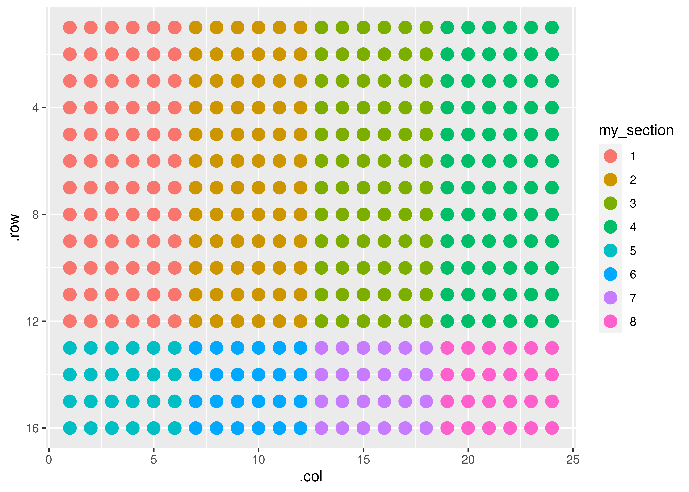
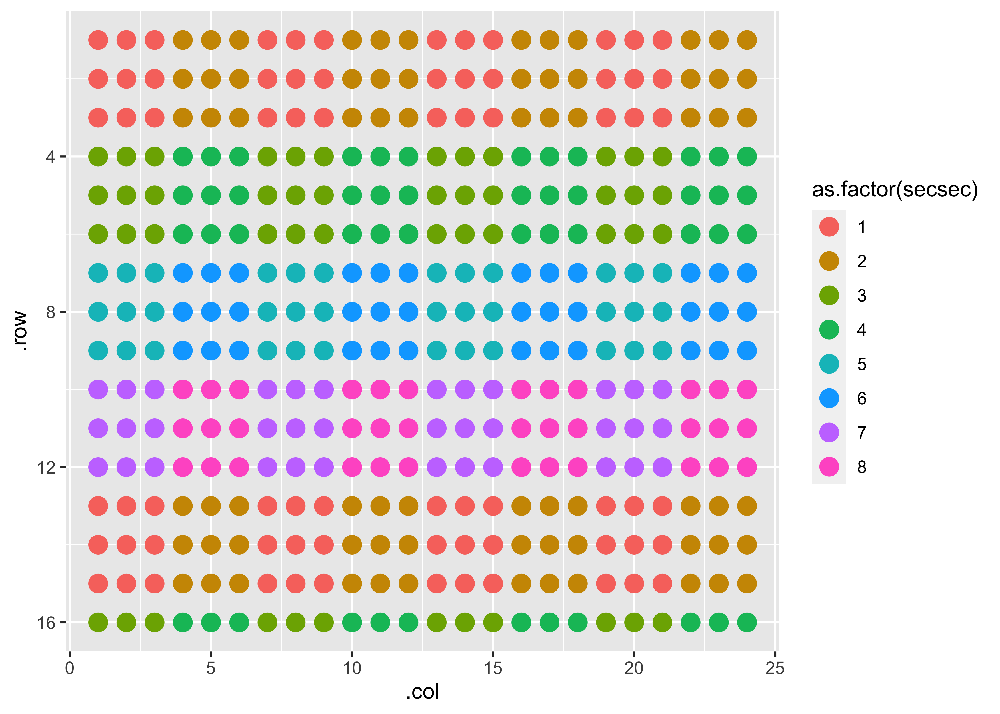

gp is a package meant to provide introduce a grammar of plates. Microwell plates are usually arranged in visually meaningful ways but are not tidy data, and their manipulation into a tidy form (or back) is uniquely cumbersome. This package is aimed at both developers that create packages that ingest and produce plate data as well as for interactive use.
Installation
You can install the development version from GitHub with:
# install.packages("devtools")
devtools::install_github("KaiAragaki/gp")Creating plates with gp
Creating a plate plot is simple:
 We can add rectangular ‘sections’ to our plates:
gp(rows = 16, cols = 24) |>
gp_sec("my_section", nrow = 12, ncol = 6, start_corner = "tl", flow = "row") |>
gp_plot(my_section)
These sections can have sections as well. KAINOTE(Easier to understand example here)
gp(rows = 16, cols = 24) |>
gp_sec("my_section", nrow = 12, ncol = 6, start_corner = "tl", flow = "row") |>
gp_sec("secsec", nrow = 3, ncol = 3, start_corner = "tl", flow = "col") |>
gp_plot(secsec)
gp also has a theme - gp_mini_theme - that lets you create sparkline-esque plates.
mini_plot <- gp(8, 12) |>
gp_sec(name = "primers", ncol = 3) |>
gp_plot(primers) +
gp_mini_theme()
ggplot2::ggsave(filename = "./man/figures/mini-plot.png",
plot = mini_plot,
height = 0.5,
width = 0.75,
units = "in",
scale = 3.5)You should align your primers in columns

Vocabulary
Axes
There are only two axes when defining plates: rows and columns
-
row: The absolute row of the plate, starting at the top of the plate. This axis corresponds most closely with the physical plate. -
col: The absolute column of the plate, starting at the left of the plate. This axis corresponds most closely with the physical plate.
Modifiers
These axes can have modifier(s) appended to their name, like:
-
sec: section. This is the axis number of a given section. -
rel: relative. This flips the axes such that the starting corner is now (1, 1) -
par: parent. This indicates whether thesecrefers to the current section or the parent section.
par will not appear without sec, but sec can appear without par. Order is important. A fully loaded column will look like row_sec_par_rel. KAINOTE(columns where?)
Sections
A section is a rectangular field of wells. A plate is section - the largest section. Sections can have sections of their own - these are child sections. All sections except the plate have parent sections. Sections must be - at most - the same size as their parent section. As of writing, sections must all be the same size, but this will likely change.
Sections can have attributes:
paddingmargin
Lanes
A lane is used to define a grid of sections, and is usually more than one well wide (otherwise it is just a row or column). Both lanes are only used to define sections if wrap = FALSE. If wrap = TRUE, then sections are allowed to flow off an edge in the specified direction (flow = "row" or flow = "col") and continue on the next line.
TODO
- Break Sections: Be able to specify if only ‘whole integer’ sections should be allowed to appear
- Margin/Padding
- Real plotting functions. Also a miniplotting function for inline plotting (a la sparklines)
- pkgdown
- update hex
- Allow user to supply a vector for rows/cols for section definition
- Data layering? Need to think about how to best do this.